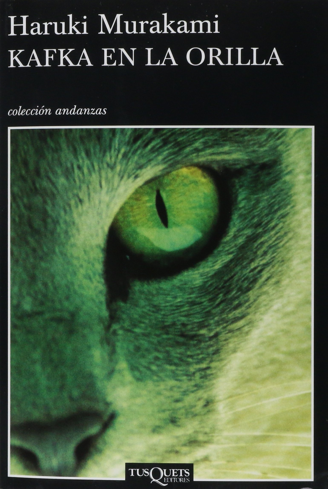

Kafka en la orilla
Este libro que se podria considerar de realismo magico al agregar elementos fantasticos a situaciones cotidianas toca temas como la libertad del protagonista quien escapa de casa a una temprana edad encontrandose con situaciones y personajes bastante peculiares, que lo llevan a enfrentar su destino.
